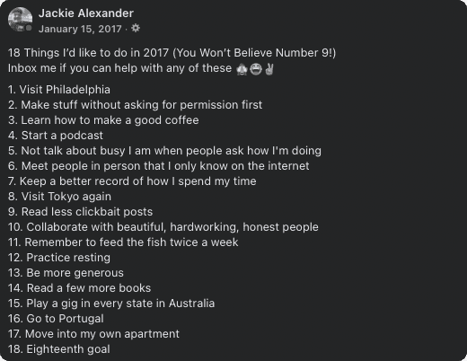
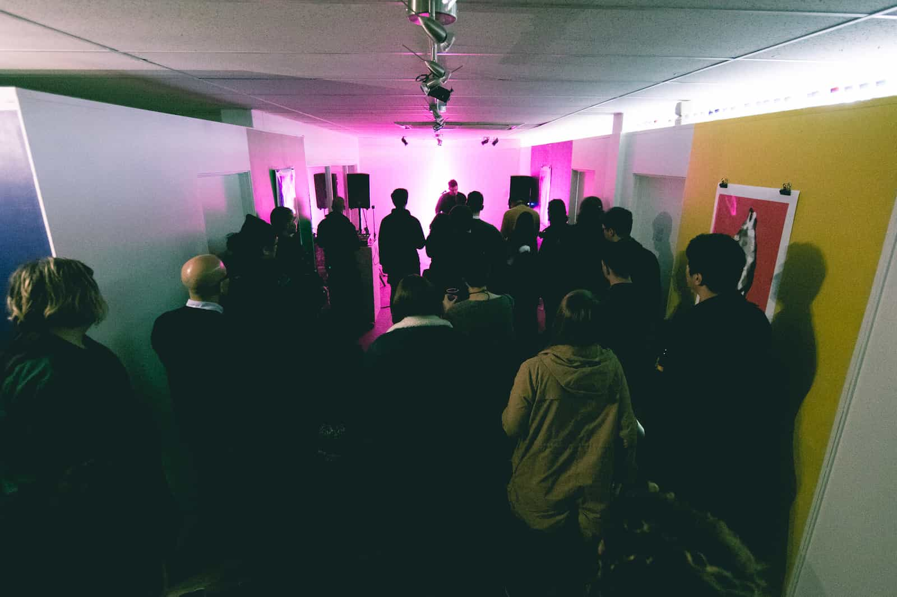

Today is the second or third Sunday of 2023. I slept in later than normal, despite vocal protests from my handsome dog Ringo Starr. I took my meds and had a shower.
Yesterday it was 37 degrees. Today it is 23. I try not to think about what the temperature dropping 24 degrees in as many hours means for the health of the planet I live on.
I head into my little office and sit at my desk and wait to see if any bright idea pops into my head to investigate or interogate for a while.
I open Facebook for some reason. It shows me something I posted six years ago for some reason. It is a list of things I wanted to accomplish in 2017. I scan the list. I start to unpack each item.
I remember the person who wrote this post, but they are not who I am now. As glad as I am that I am not that person I cringe realising I was them once. I wonder if I am who I am now because of who I was then? Tracing the paths back feels like a bigger task than I am looking for today.

1. Visit Philadelphia
I only wrote this because I’d been listening to Modern Baseball for years and the songs felt comfortable. Maybe the songs feel comfortable because of some trait of where they were written? Maybe that feeling of comfort would extend past the songs if I visited the place they were written? I did not visit Philadelphia in 2017.
2. Make stuff without asking for permission first
After years of volunteering on the creative team of a large pentecostal megachurch and two years of extraordinarily strenuous study at university, I was desperate for opportunities to use my technical and creative skills that weren’t qualified by practical outcomes.
After struggling to find projects to contribute to in Adelaide, I created Wolfjay to give myself an opportunity to do whatever I wanted. I made an EP, played some shows, put on an art exhibition, and created a new identity to inhabit.
Now in 2023 I’m glad I learned a framework for taking skills learned on my own on the internet and using them to solve problems for communities. I learned the hard way, and often out of frustration at my intentions being misconstrued, but eventually learned how to listen and suggest and contribute and negotiate.
My work day to day now is at least 85% acknowledging or identifying problems, making plans, suggesting solutions, and implementing plans.
The things I occupy my time with outside of work hours though are almost entirely around self-expression. Constantly trying to learn and understand things so I can build new things to share a perspective. Sometimes songs, sometimes layouts for a house I might live in one day, sometimes a shoot schedule for a film I might never make.
And this balance definitely started in 2017 when I finally gave myself room to balance both.

3. Learn how to make a good coffee
Could I have learned how to make a good coffee in 2017? Yes. Did I? No.
This was a shallow, surface level goal.
I did not learn how to make a good coffee. In 2017 I was living in the cheapest room in the cheapest house in one of the most expensive suburbs in Adelaide. The only furniture I owned was a broken mattress with springs sticking out of it, a disgusting sofa that didn’t sit level, and an unassembled desk. There were three other bedrooms, and no living room. Five other people lived in that house while I was there. I never met two of them. I never knew any of their last names, except the one I would transfer my $440 of rent to on the 14th of the month.
My then undiagnosed ADHD made it exceptionally plan more than 12 hours ahead for anything other than employment, bills, and making music. Spending $5 a day on coffee was infinitely easier to justify than the various paraphernalia required to prepare a coffee, and that’s before considering I never had reliable access to a kitchen other than when at a coworking space at night.
After 5 years, and investing at least $10,000 into various cafe’s, I shifted to shitty home job freeze dried coffees with a splash of chocolate powder in an effort to save some money. I still do now know how to make a good coffee.
4. Start a podcast
I did not start a podcast. I did release a few episodes of a mixtape-esque thing on Soundcloud, but an episode got flagged for copyright infringement and I stopped making them. It’s something I’ve kept thinking about in the years since, but I wonder what the function of it would be. What problem is it solving for me? The biggest ache for me creatively for years has been lack of community, and for years I’ve thought the only option is to build a community around myself, to position myself as a central point people can congregate around. Maybe that also is a hangover from my time at a pentecostal church, where any suggestion of participating in a community outside of the church, for any reason other than to glean members of it away and to the church, was discouraged. But the idea of being so self-important that people are following me or around me or anything like that has always made me very very anxious!
My goal now is to just be a part of other communities, not try and make a community around myself. So no, I still have not started a podcast.
5. Not talk about how busy I am when people ask how I’m doing
I can’t remember how I responded when people asked me this in 2017. I think when I used to say that I was busy, the mental image in my head when I’d say it was that I was treading water, out in the ocean, with massive waves crashing around me. So yeah I was fucking busy trying not to drown! I don’t think I was ever proud about being busy. I just didn’t have an option and was working hard to stay alive!
I’m still busy, but with fewer things. I don’t say “i’m busy” as some bizarre linkedin badge of honour clickbait bullshit. I just have a bunch of things I like doing and spread my time between them. Am still busy!
6. Meet people in person that I only know on the internet
Fuck yeah I did this! I went on a bunch of little trips around AUS in 2017, met up and hung out with some cool people in NSW and VIC. Was nice! I still try hang out with people from the internet IRL when I can.
7. Keep a better record of how I spend my time
Eh I think this was the “i’m busy trying to survive” thing again, who cares. I survived. No need to keep a score so I can compare myself with the shit other people are doing. Who cares. Maybe I got a little better at recording key events, it’s not hard to go back and find photos and notes on what I did in 2017, but also eh fuck it, it takes an hour to record something you spent two hours on. You don’t have to document everything if it gets in the way. I over documented for a while and stopped because it was distorting what I was doing and how I’d participate in things. It’s nice to just experience things sometimes.
8. Visit Tokyo again
I did not visit Tokyo again. I spent a couple weeks there during my degree and really loved it. I bought flights really cheap to go over, but work leading up to the trip was really inconsistent and I couldn’t make it happen. I was working at a shitty camera store and the boss didn’t give me the time off I asked for, and I couldn’t get a refund on the flights, so I just let it go. Was fired from the job a few weeks later and in a financial pickle, so am glad I didn’t put that extra strain on myself. I told friends at the time that I bailed on the trip because my Grandma was unwell. I still haven’t been back to Tokyo.
9. Read less clickbait posts
Eh who cares, clickbait sucks and I still read it lmao.
10. Collaborate with beautiful, hardworking, honest people.
Yeah look I know this is cringe lol. Not sure how to measure this but I did work with some nice people on launching wolfjay stuff who became long term friends from then on. I think this idea went on to inform my approach to working/hiring/collaborating with people though. I try to only work with people who are kind, who do good work, and who have good work ethic. If anyone of those is missing shit will fall apart eventually. If their work rocks and they’re consistent, but they’re a cunt, it won’t work long term. If they’re lovely and do amazing work but don’t get stuff over on time or take days to respond to messages, it’s not gonna work long term. If they’re lovely, and super consistent, but their work just fuckin sucks, it’s not gonna work long term.
This has saved me a lot of time and stress and emotional energy, and everytime something hasn’t worked out it’s because one of these things were lacking and I tried to pretend it wasn’t a big deal.
It also massively applies to me and my work and my relationships as well! If I’m doing something and it’s good, and I enjoy it, but I’m not consistent with it, it won’t work. Or I’m consistent and it’s good but I have a bad attitude or am not excited for it, it won’t work. Or if I’m consistent and keen but the thing just sucks, it won’t work. I try to pay attention to those things in projects I’m working on, or in jobs I’m in, or in relationships with other people; romantic or platonic. It’s just always the best indicator of things.
11. Remember to feed the fish twice a week.
Didn’t own any fish. Must have thought it was a cute funny relatable thing to drop on a list. Isn’t cute funny or relatable. Just shows I wasn’t a very good editor. Maybe I’m still not.
12. Practice resting.
This almost definitely came from some bullshit linkedin entrepeneur influencer bullshit. I’m glad I didn’t rest then. If I rested I probably wouldn’t have survived. I did what I had to to make something of a very fucking shit situation. The fire consuming your house won’t stop so you can rest. Put that shit out!
13. Be more generous.
Eh idk, I’ve always been keen to help where I can. This is some bullshit “holier than thou” shit, fuck off.
14. Read a few more books.
Again, another undiagonosed ADHD moment. Reading books means focusing, focusing means sitting still, sitting still is really hard. Didn’t read many books then, and only read a few more now. Audiobooks are a bit better, but the circumstances have to be fucking perfect for it to work. Not a big deal.
15. Play a gig in every state in Australia.
I’ve set this goal every year since then, until this year. It’s a pointless goal that isn’t grounded in anything other than being able to say I did it. Still haven’t played in TAS, WA, or NT. Played SA, VIC, NSW, and QLD in 2019 and it put me in massive amounts of debt and almost killed me. Vanity metrics can fuck off. I could blow $5k and play shows to empty rooms across the country tomorrow. Wouldn’t prove anything other than the fact than that I had $5k to blow.
16. Go to Portugal
Ahhh another pentecostal hangover. I dated someone in the last 9 months I was at the church and we’d say that one day we’d go to Portugal together. After we broke up around when I left the church I wanted to go to Portugal on my own purely out of spite. Another pointless goal grounded in nothing except being able to say that I did it.
17. Move into my own apartment
There was no way this was going to happen in 2017. It didn’t didn’t happen until 2021, and even then not because I planned for it or could afford it. I just couldn’t find another housemate and spent all my savings on paying double rent and it was easier to my still undiagnosed ADHD brain to apply for higher paying jobs so I could afford the rent than find another housemate.
The end of 2016 was maybe the first time though that I really started thinking about what kind of situation I wanted to work towards. I thought about it a lot. I dreamed of a little apartment, on a third or fourth floor in the Adelaide CBD, with a view of the Jacaranda trees on Wakefield st when they bloom in the last few months of the year. I’d have a small dog who’d sleep on the couch while I worked on music, and who’d come with me when I’d run errands during the day. Maybe a Jack Russel, or a Schnauzer, or a West Highland White.
I moved from Adelaide in 2019 when I was fired while still on probation for a job I took almost 6 months to interview and apply for. I moved to Melbourne and spent a year subletting rooms and small apartments and doing whatever work I could find. I eventually moved into a small cottage in Abbotsford and a few months later took over the lease. I adopted a small dog, a beagle x pug named Cora.
I work from home, and have a small study with a big window and some instruments and computers. Cora sleeps behind me on a brown leather couch while I’m working. It’s rare that I’m in the study and she isn’t. Sometimes her big little brother Ringo Starr joins us, but most of the time he lies on the bed looking out the window.
It didn’t happen until 5 years later, but I’m also surprised it happened as quickly as it did. I love my little house, and my little job, my little activities, and my little dogs.
If you liked this you can tip me a few dollars :)
You can also listen to my music on streaming services,
or buy it on bandcamp, or check out more of my work.
Thank you for supporting the work of an independent, self-funded, non-binary artist 😌🧡✨